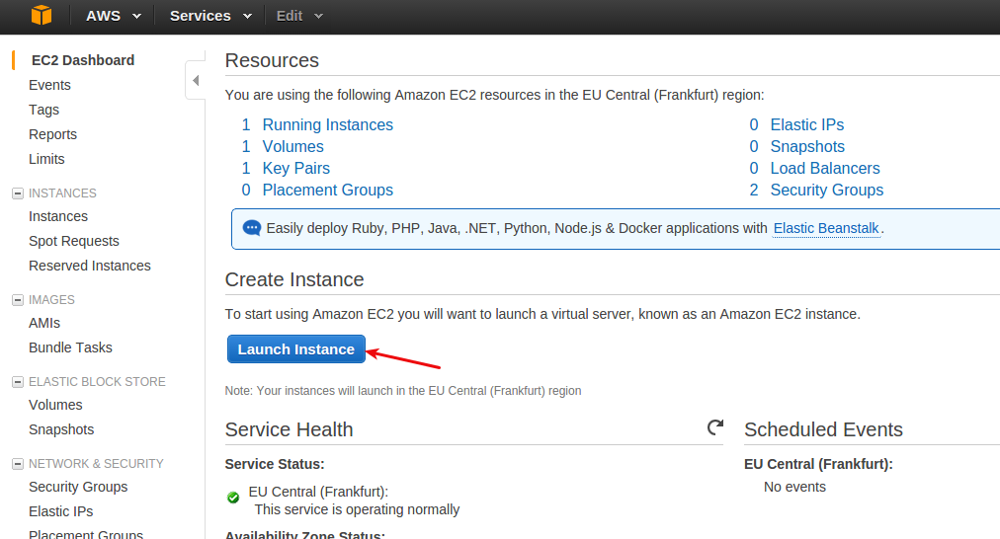
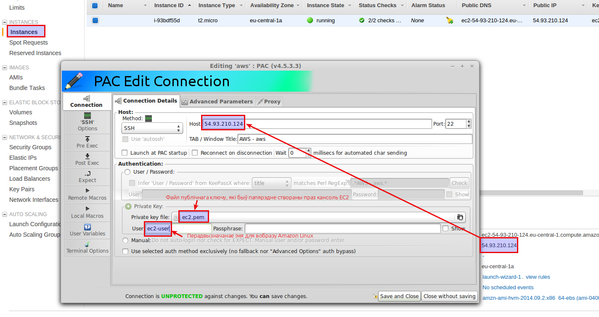
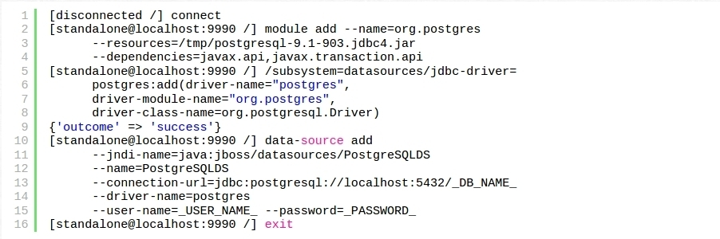

Docker патрабуе 64-бітнай вэрсіі Ubuntu (альбо яе клона), а таксама вэрсіі kernel не ніжэй за 3.10. Каб праверыць вэрсію kernel, скарыстайцеся камандай:
$ uname -r
4.4.0-21-generic
Абнаўляем базу даных apt-get і ўсталёўваем неабходныя пакеты:
У выніку павінен усталявацца Docker, запусьціцца сэрвіс, а таксама будзе прапісана каманда яго аўтастарту пры загрузцы сыстэмы. Каб пераканацца што сэрвіс запушчаны:
$ sudo systemctl status docker
● docker.service - Docker Application Container Engine
Loaded: loaded (/lib/systemd/system/docker.service; enabled; vendor preset: enabled)
Active: active (running) since Thu 2016-10-20 09:24:30 +03; 10h ago
Docs: https://docs.docker.com
Main PID: 1154 (dockerd)
Выкананьне без sudo
docker-сэрвіс працуе праз Unix-socket, якім валодае root-карыстальнік, таму астатнія карыстальнікі могуць выконваць каманду docker толькі праз каманду адміністраваньня сыстэмы sudo. Для зручнасьці можна пазбавіцца ад такой неабходнасьці, для гэтага трэба дадаць карыстальніка пад якім вы працуеце ў docker-групу:
$ sudo usermod -G docker -a $(whoami)
Каманды
У агульным выпадку каманда docker-сэрвісу выконваецца наступным чынам:
$ docker [option] [command] [arguments]
Вывесьці сьпіс усіх даступных каманд можна набраўшы каманду docker:
Ніжэй прыведзена апісаньне некаторых з камандаў (усюды, дзе ў камандах пазначаюцца імёны вобразаў ці кантэйнэраў, могуць выкарыстоўвацца іх ID):
Каманда
Апісаньне
docker images
Выводзіць сьпіс асноўных вобразаў, якія раней былі сьцягнутыя ў сыстэму
docker images -a
Выводзіць сьпіс усіх (у тым ліку прамежкавых) вобразаў, якія раней былі сьцягнутыя ў сыстэму
docker pull <IMAGE>
Сьцягвае вобраз з рэгістру ў сыстэму
docker push <IMAGE>
Закідвае вобраз з сыстэмы ў рэгістар
docker rmi <IMAGE>
Выдаляе вобраз з сыстэмы
docker ps
Выводзіць сьпіс працуючых кантэйнэраў
docker ps -a
Выводзіць сьпіс усіх, у тым ліку непрацуючых кантэйнэраў
docker create <IMAGE>
Стварае кантэйнэр з вобразу
docker run <IMAGE> [<COMMAND>]
Стварае і запускае новы кантэйнэр з пазначанага вобразу і (неабавязкова) запускае ў ім пэўную каманду
docker start <CONTAINER>
Запускае кантэйнэр
docker logs <CONTAINER>
Выводзіць лог кантэйнэра
docker port <CONTAINER>
Выводзіць сьпіс мапінгу партоў кантэйнэра
docker top <CONTAINER>
Выводзіць сьпіс працуючых працэсаў кантэйнэра
docker stop <CONTAINER>
Спыняе кантэйнэр
docker restart <CONTAINER>
Спыняе і па новай стартуе кантэйнэр
docker kill <CONTAINER>
Прыбівае кантэйнэр
docker commit <CONTAINER>
Стварае новы вобраз з кантэйнэру, уключаючы ўсе зьмены, якія былі ў ім зроблены пасьля старту
docker network
Кіраваньне сеткай докера docker network inspect bridge – выведзе падрабязную інфармацыю пра сетку bridge
docker node
Кіраваньне вузламі клястэру.
docker volume
Кіраваньне тамамі даных.
docker login
Уваход у рэгістар.
docker logout
Выхад з рэгістру.
Вобразы
docker-кантэйнэры запускаюцца з вобразаў, якія захоўваюцца ў лякальнай сыстэме альбо ў рэгістры (прыватным альбо публічным як Docker Hub). Каб праглядзець, якія вобразы ўжо захоўваюцца лякальна, можна скарыстацца камандай:
$ docker images
REPOSITORY TAG IMAGE ID CREATED SIZE
hello-world latest c54a2cc56cbb 3 months ago 1.848 kB
Пошук вобразаў
Шукаць даступныя вобразы можна пры дапамозе каманды docker search:
$ docker search ubuntu
NAME DESCRIPTION STARS OFFICIAL AUTOMATED
ubuntu Ubuntu is a Debian-based Linux operating s... 4903 [OK]
ubuntu-upstart Upstart is an event-based replacement for ... 67 [OK]
rastasheep/ubuntu-sshd Dockerized SSH service, built on top of of... 45 [OK]
ubuntu-debootstrap debootstrap --variant=minbase --components... 28 [OK]
…
smartentry/ubuntu ubuntu with smartentry 0 [OK]
teamrock/ubuntu TeamRock's Ubuntu image configured with AW... 0 [OK]
OK у калёнцы OFFICIAL азначае, што вобраз зроблены і падтрымліваецца кампаніяй, якая "валодае" альбо стаіць за праектам.
Сьцягваньне вобразаў
Каб сьцягнуць вобраз з рэгістру ў лякальную сыстэму без яго запуску, трэба скарыстацца камандай:
$ docker pull ubuntu
Запуск кантэйнэра з вобразу
Каманда docker run запускае кантэйнэр з пэўнага вобразу. Калі такога вобразу яшчэ няма на лякальнай машыне, ён будзе спачатку сьцягнуты з рэгістру і потым застартаваны (парамэтры -i і -t дазваляюць атрымаць доступ да інтэрактыўнай кансолі працуючага кантэйнэру):
$ docker run -it ubuntu
Unable to find image 'ubuntu:latest' locally
latest: Pulling from library/ubuntu
…
Digest: sha256:2d44ae143feeb36f4c898d32ed2ab2dffeb3a573d2d8928646dfc9cb7deb1315
Status: Downloaded newer image for ubuntu:latest
root@504d5f9b2c66:/#
Камандны радок павінен будзе зьмяніцца, адлюстроўваючы той факт, што зараз кансоль не вашага кампутара, але кантэйнэра (сымбальна-лікавы ID пасьля root@ – гэта ID кантэйнэра):
root@504d5f9b2c66:/#
Унёсак зьменаў у працуючы кантэйнэр
Можна ўнесьці зьмены ў працуючы кантэйнэр (у параўнаньні з вобразам, зь якога ён быў застартаваны), напрыклад аднавіць базу даных apt-getUbuntu:
root@504d5f9b2c66:/# apt-get install -y nodejs
Reading package lists... Done
Building dependency tree
Reading state information... Done
The following additional packages will be installed:
libicu55 libssl1.0.0 libuv1
The following NEW packages will be installed:
libicu55 libssl1.0.0 libuv1 nodejs
…
update-alternatives: using /usr/bin/nodejs to provide /usr/bin/js (js) in auto mode
Processing triggers for libc-bin (2.23-0ubuntu3) ...
Файлавая сыстэма докера часовая па-змоўчваньні. Калі застартаваць пэўны вобраз, ўнесьці нейкія зьмены ў сыстэму кантэйнэра, спыніць яго і зноў застартаваць той жа самы вобраз, усе зьмены, якія былі зроблены на папярэднім кроку, будуць згубленыя. У сувязі з гэтым вобразы докера – гэта больш шаблёны, чым звыклыя нам вобразы віртуальных машын. Таму ўсталяваўшы NodeJS у кантэйнэр у папярэднім прыкладзе, мы будзем мець кантэйнэр, які адрозьніваецца ад свайго вобразу. Гэты стан можна захаваць у новы вобраз. Для гэтага трэба выйсьці зь яго:
root@504d5f9b2c66:/# exit
І захаваць зьмены ў новы вобраз:
$ docker commit -m "What did you do to the image" -a "Author Name" container-id repository/new_image_name
Дзе:
container-id – гэта ID кантэйнэра, на які мы зьвярталі ўвагу вышэй;
repository – гэта імя вашага уліковага запісу альбо рэпазыторыю ў Docker Hub;
new_image_name – гэта імя новага вобразу;
Напрыклад:
$ docker commit -m "added node.js" -a "Yurtsevich" 504d5f9b2c66 yurtsevich/ubuntu-with-nodejs
Можна пераканацца, што вобраз сапраўды быў захаваны:
$ docker images
REPOSITORY TAG IMAGE ID CREATED SIZE
yurtsevich/ubuntu-with-nodejs latest f9c99a5f7a94 3 seconds ago 215.3 MB
ubuntu latest f753707788c5 8 days ago 127.2 MB
hello-world latest c54a2cc56cbb 3 months ago 1.848 kB
Розьніца ў памеры паміж вобразамі ubuntu і yurtsevich/ubuntu-with-nodejs пазначае аднаўленьне базы даных apt-get і ўсталяваньне NodeJS у кантэйнэры, які мы запусьцілі з вобразу ubuntu. Але трэба памятаць што вобраз пакуль што захаваны толькі лякальна.
Закід вобразаў
Каб закінуць у рэгістар захаваны лякальна вобраз, трэба спачатку ўвайсьці на Docker Hub:
Перад тым, як стартаваць экзэмпляр сэрвэру, трэба стварыць пару ключоў:
Пры стварэньні пары ключоў сэрвіс Амазона запусьціць запампоўку публічнага ключа, яго трэба захаваць напрыклад у тэчку ~/.ec2/ і потым спаслацца на яго пры стварэньні ssh-сэсіі. Пасьля гэтага цісьнем кнопку для старта сэрвэру:

І выбіраем Amazon Linux са сьпісу магчымых перадвызначаных вобразаў:
Пры стварэньні ssh-сэсіі ў якасьці імені карыстальніка трэба ўвесьці ec2-user:

Continuous Integration
Усталёўка Jenkins на Amazon Linux праз SSH-кансоль:
Акрамя вэб-кансолі кіраваць праграмай можна праз client tools (rhc) – кансольную праграму, якая працуе на Ruby.
Ствараем праграму
$ rhc app-create myapp wildfly
Будзе створана загатоўка JEE-праграмы для працы з сэрвэрам WildFly наступнай структуры:
|-- deployments/ Location for built WARs
|-- src/ Maven source structure
|-- pom.xml Maven build file
`-- .openshift/ Location for OpenShift specific files
|-- config/ Location for configuration files such as standalone.xml
|-- action_hooks/ See the Action Hooks documentation
`-- markers/ See the Markers documentation
Дадаем PostgreSQL:
$ rhc cartridge add postgresql-9.2 -a myapp
Адлеглыя WildFly і PostgreSQL будуць цалкам наладжаныя на працу. Застаецца наладзіць лякальныя WildFly і PostgreSQL.
ЗапампоўваемJDBC-драйвэр для PostgreSQL той вэрсіі, якая лякальна ўсталяваная (няхай гэта будзе postgresql-9.1-903.jdbc4.jar), і зьмяшчаем яго ў тэчку /tmp. Далей запускаем кансоль кіраваньня WildFly:
/opt/wildfly-8.2.0/bin $ bash jboss-cli.sh
І пасьлядоўна наступныя каманды ў самой кансолі (для зручнасьці агляду тут устаўлены пераносы радку, але на самай справе рабіць іх ня трэба):

Юзэр _USER_NAME_ з паролем _PASSWORD_ і экзэмпляр базы _DB_NAME_ ужо павінны быць створаныя ў лякальным PostgreSQL.